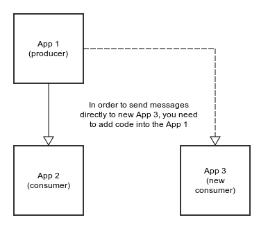
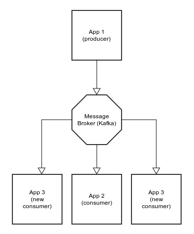
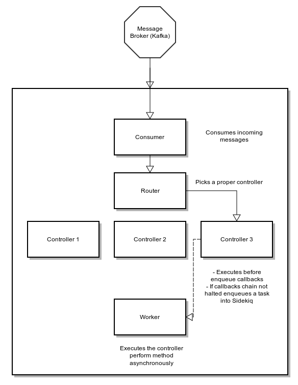
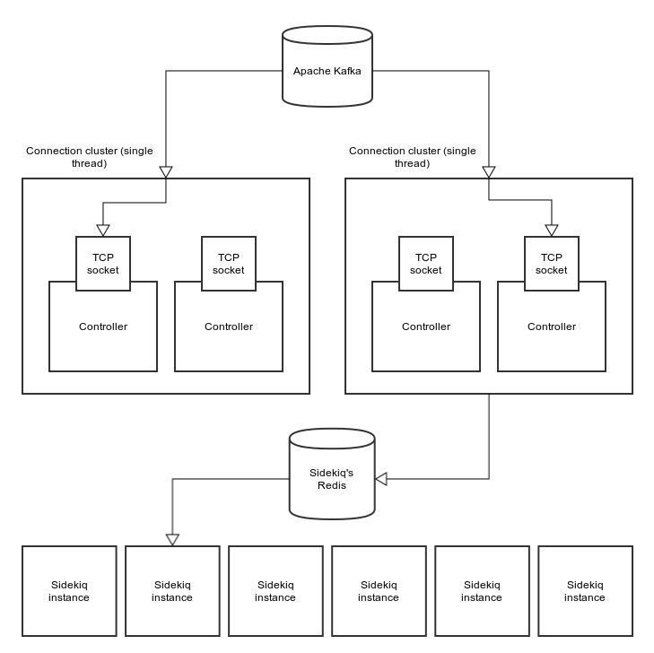
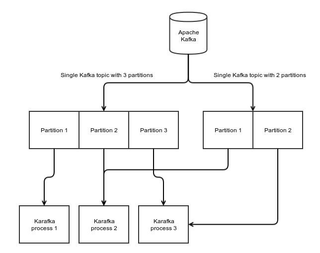
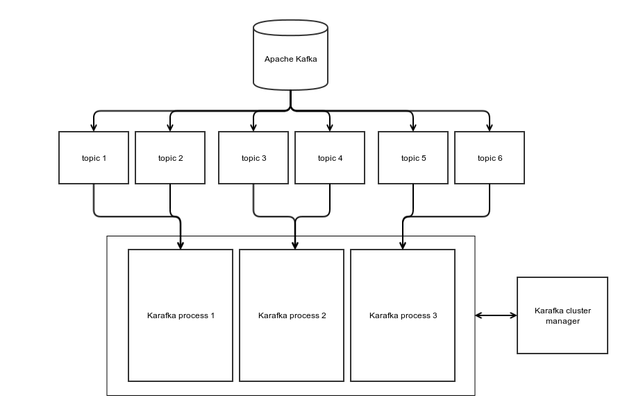

What is Apache Kafka?
- Kafka is a high-throughput distributed messaging system
- Kafka is designed to allow a single cluster to serve as the central data backbone for a large organization
- It can be elastically and transparently expanded without downtime
- It provides broadcasting to many applications
- Allows to build systems that are event based
Who uses Apache Kafka?
- Linkedin
- Yahoo
- Twitter
- Netflix
- Square
- Spotify
- Pinterest
- Uber
- Tumblr
- Cisco
- Foursquare
- Shopify
- Oracle
- Urban Airship
- OVH
- And many more...
What is Karafka?
- Karafka = Kafka + Ruby => KaR(uby)afka
- It is a microframework
- It was designed to simplify Kafka based applications development
- It allows developers to build "Rails like" apps that consume and produce messages
Why we developed Karafka?
- Because Ruby is good
- Because Kafka is good
- We've needed tool that would allow us to build applications faster
- We've needed tool that would allow us to process faster
- We've needed tool that would allow us to handle events and messages from many sources and process them the same way
Why even bother with messaging when there is HTTP and REST?
- Because HTTP does not provide broadcasting
- Because we often need to trigger many actions based on a single event
- Because we don't need to maintain internal API clients
- Because with a message broker you can replace microservices transparently
- Because you can obtain better microservices isolation
- Because you can create new microservices that use multiple different events from many sources
It really is about messaging
Real life is asynchronous
Microservices without broadcasting
Without a broker you need to add code to both ends of your SOA system

Microservices with broadcasting
With broker all you need to know is topic on which you want to listen

Karafka uses goods that are already existing
- Most popular Ruby Kafka client: Poseidon
- Poseidon Cluster gem for topic partition distribution
- Celluloid to introduce sockets clustering inside threads
- Sidekiq to support background data processing
- Rails app structure (app/ config/ lib/) for bigger apps
- Sinatra app structure for small apps (even as a single file)
Karafka ecosystem
Each part can be used independently
- Karafka Framework - Engine to process incoming messages
- WaterDrop - Poseidon based library for outgoing messages
- Sidekiq Glass - Sidekiq worker wrapper that provides optional timeout and after failure (reentrancy)
Karafka framework components
Apart of the implementation details, Karafka is combined from few logical parts:
- Messages Consumer (Karafka::Connection::Consumer)
- Router (Karafka::Routing::Router)
- Base Controller (Karafka::BaseController)
- Base Worker (Karafka::BaseWorker)
Karafka framework components

Karafka framework scalability
Each scaling strategy targets a different problem
Scaling strategies can be combined
Following strategies are available:
- Scaling using multiple Karafka threads
- Scaling using Kafka partitions
- Scaling using Karafka clusterization
Scaling using multiple threads
- Good when you have multiple topics that are not 100% utilized
- Good when you want to provide paralleism but still have a single process running
- Generally the easiest way to have multiple controllers listening at the same time
Scaling using multiple threads

Scaling using Kafka partitions
- Topic partition is the unit of parallelism in Kafka
- Partitions are an answer to heavy duty topics
- Karafka processes automatically rebalance between available partitions
- Karafka requires topics partitioning when you want to handle more than 30 000 messages per second per topic
Scaling using Kafka partitions

Scaling using Karafka process cluster
- Single Karafka process can handle up to 30 000 messages per second (total)
- It measn that the bigger your application is the slower it gets (per controller)
- Thanks to process clustering, each Karafka process will listen only to a selected part of topics
- That way with a 10 process cluster, we can increase throughput to more than 300 000 messages per second
Scaling using Karafka process cluster

How can I start using it?
# Gemfile
source 'https://rubygems.org'
gem 'karafka', github: 'karafka/karafka'
# rakefile.rb
ENV['KARAFKA_ENV'] ||= 'development'
Bundler.require(:default, ENV['KARAFKA_ENV'])
bundle install
bundle exec rake karafka:install
Then open app.rb and update configuration settings
All the configutation options are described here:
github.com/karafka/karafka
Karafka conventions and features
Karafka conventions and features
Karafka maps controllers names directly to topics names, so you can easily build you applications based on topics naming conventions
NewVideosController.topic #=> :new_videos
NewVideosController.worker #=> NewVideosWorker
Users::PaymentsController.topic #=> :users_payments
Users::PaymentsController.worker #=> Users::PaymentsWorker
By default Karafka builds a worker class per controller based on a controller name. This will allow you to prioritize (if needed) some of the Sidekiq workers (or spin up separate workers for given queues)
Karafka conventions and features
Of course you can overwrite all of the default behaviours
class CreateVideosController < Karafka::BaseController
self.topic = :super_topic_name
self.worker = MyDifferentWorker
def perform; end
end
Karafka conventions and features
Karafka controllers are simple. All you need is a #perform method that will be executed asynchronously in response to an incoming message
class CreateVideosController < Karafka::BaseController
def perform
Video.create!(params[:video])
end
end
Karafka conventions and features
#before_enqueue filter that acts in a similar way to Rails #before_action
class CreateVideosController < Karafka::BaseController
before_enqueue -> {
# Reject old incoming messages
# When before_enqueue returns false,
# task won't be send to Sidekiq
return false if params[:sent_at] < 1.minute.ago
}
end
It can be used to provide first layer data filtering
Karafka conventions and features
There are also few usefull rake tasks available:
bundle exec rake -T
rake kafka:topics # Lists all the topics available on a Kafka
rake karafka:install # Creates whole minimal app structure
rake karafka:run # Runs a single Karafka processing instance
rake karafka:sidekiq # Runs a single Sidekiq worker for Karafka